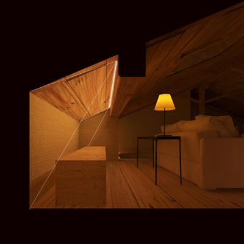

vb
My cool side
My cool side
Ciao! Mi chiamo Valeria,
sono una designer e il progetto è la mia passione.
Mi piace sporcarmi le mani, anche letteralmente, di solito con carta e colla, a volte anche con farina e uova.
Al sushi preferisco la pizza, allo stile provenzale il nordico, e al mare la montagna. Sono appassionata di moda sostenibile, cartoleria e oggetti vintage.
Hi! My name is Valeria, I'm a designer and project is my true passion. I like getting my hands dirty, literally too, usually with paper and glue, and sometimes with flour and eggs. I'll always choose pizza over sushi, nordic over provencal style, and mountain over sea. I'm passionate about ethical fashion, stationery and vintage artifacts.
my journey into design
industrial design
2016
Ho scoperto il design frequentando il corso di laurea in Disegno Industriale presso La Sapienza di Roma
I first met design with the Industrial Design course at La Sapienza in Rome
visual merchandising
2017
Subito dopo la laurea, ho lavorato come stagista visual merchandiser presso Ikea
Just after graduation, I worked as a visual merchandising intern at Ikea Rome
exhibit design
2018
Con il master in Exhibit Design ho seguito la mia passione per l'allestimento degli spazi pubblici, tanto interni quanto esterni
With the Exhibit Design master I pursued my passion for interior and outside public spaces set-up
lighting design
2019
Con la mia esperienza in uno studio di Lighting Design, ho scoperto e approfondito una qualità intrinseca dello spazio, che lo definisce: il buio, e la luce che lo rompe
With the experience in a Lighting Design studio, I discovered and studied an intrinsic, defining quality of every space: dark, and light breaking it
ux-ui design
2020
Ho scelto di mettermi in gioco ancora una volta, e arricchire le mie competenze rendendole digitali!
I chose to play the game once again and expand my skills by turning them from offline into digital!
Il mio percorso nel design è stato variegato
e così lo sono diventate anche le mie competenze. Mi piace occuparmi del progetto a 360°, e continuare a studiare per migliorarmi.
My journey into design was multi-faceted, and so became my skills. I like caring about project all-round, and keep studying to improve myself.
what I do
- concept
- storytelling
- visual layout
- 2D, 3D drawing
- scale modeling
- illustrative rendering
- graphic communication
- photomontage
- ux/ui design
my skills
what more


i like:
discover
I progetti che seguono sono quelli che preferisco,
per diverse ragioni. Provengono da momenti diversi della mia formazione educativa, professionale e anche di personale intuizione. Di tutti ho curato ogni aspetto, dal concept alla presentazione, dai modelli 2D a quelli tridimensionali, tanto digitali quanto fisici, dagli elaborati grafici ai rendering foto-grafici.
The following projects are my favourite ones, for different reasons. They come from different moments of my educational and professional formation, as well as from personal inspired ones. Each one of them where curated by me, from concept to presentation, from 2D to 3D digital models and mockups, to graphic and photo-graphic renderings and layouts.
Wannabee
graphic
Una app per chi vuole migliorare e migliorarsi, e trovare una community responsabile.
Want to know more?
Light it up
lighting
effettomatassa
graphic
Mission: rendere i dati sul fast fashion visibili e comprensibili atttraverso il linguaggio dell'infografica.
Want to know more?Logos
exhibit

Sagome che aggregandosi formano spazi, come le lettere con le parole
Want to know more?

FashiOn Mars
exhibit
Una mostra sulla moda che guarda al futuro non può che essere ambientata su Marte...
Want to know more?